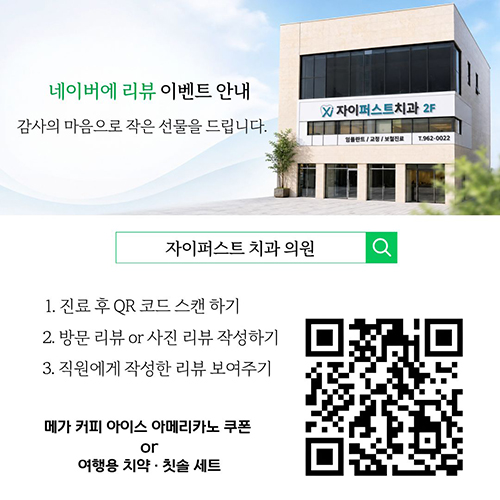
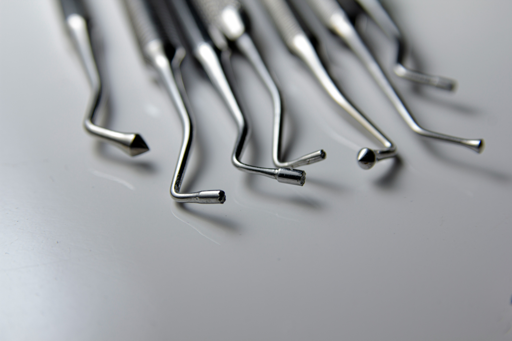

Director's Philosophy
좋은 치료는
진심과 경험에서 시작됩니다.
"아이부터 부모님까지 믿고 맡길 수 있는,
가족 모두의 치과 주치의가 되겠습니다."
운암동 자이퍼스트 치과는 20년 이상의 임상경험을 바탕으로
환자 한 분 한 분에게 꼭 필요한 치료를 제공합니다.
과잉진료 없이 정확한 진단을 우선하며, 불편한 부분을 해결하고
합리적인 치료비로 부담을 덜어드립니다.
김성각 원장
Integrated Dentistry Specialist
전남대학교 치과대학 졸업.
전 미소담치과 의원 대표 원장.
VDRI The endodontic course 수료.
보스톤 임플란트 연구회 정회원.
Dr. Choi & associates The course of precision prosthesis 수료.
엄지윤 원장
Integrated Dentistry Specialist
전남대학교 치과대학 졸업.
연세대학교 치과대학 보존과 연수.
연세대학교 치과대학 보철과 연수.
고려대학교 치과병원 치주과 연수.
전남대학교 치과대학 교정과 The course of advanced orthodontics 수료.